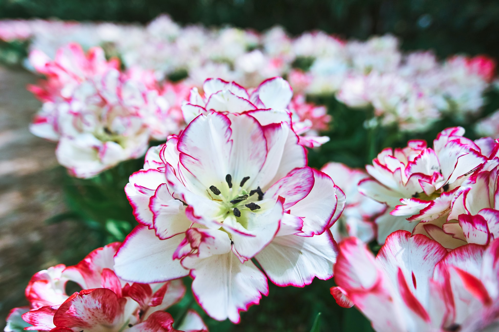
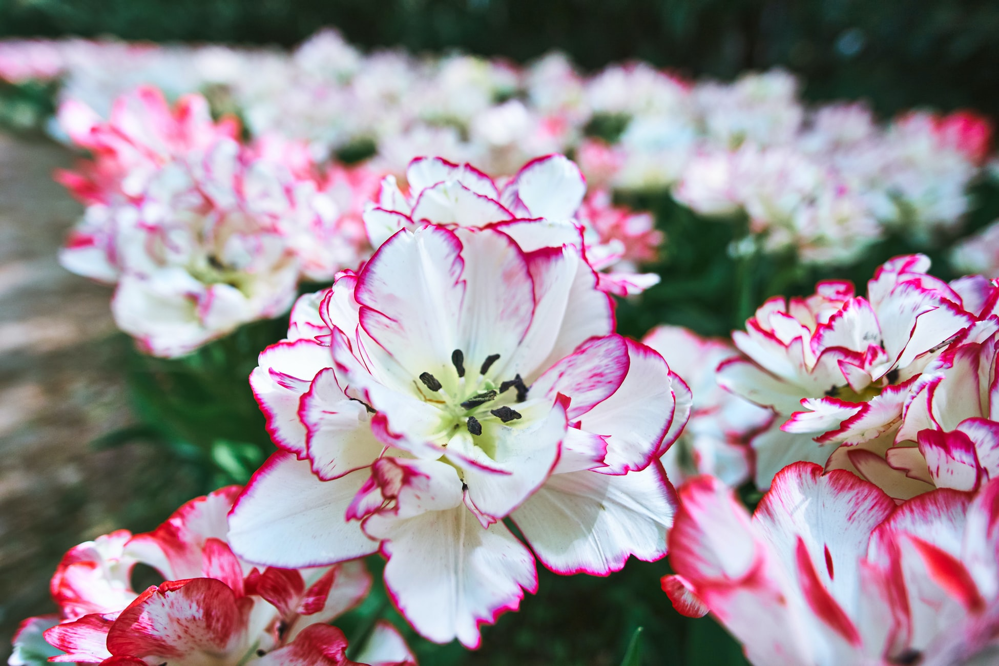

Netherlands ရဲ့ သိပ်လှတဲ့ ကျုးလစ်ပန်းခင်းကြီး Keukenhof လို့ခေါ်တဲ့ သိပ်ကိုလှတဲ့ ပန်းခြံကြီးကို ရောက်ခဲ့တယ် မြို့ပြင်ဘက်မို့ ရာသီဥတုက မြို့ထဲမှာထက် နှစ်ဆပိုအေးတယ် လေများ တစ်ချက်ချက်တိုက်လိုက်ရင် အရိုးထဲထိအောင် စိမ့်တက်သွားတာ လေနဲ့တူတူ ပန်းနံတွေပါလာလို့သာ အာရုံပြောင်းပြီး သိပ်မအေးဘူးထင်ရတာ အခုက ချယ်ရီပွင့်ချိန်မို့ ကျုးလစ်တွေအပြင် ချယ်ရီတွေပါ အများကြီး ပွင့်နေလို့ ကျုးလစ်နဲ့ အပြိုင် ဘယ်သူပိုလှလဲဆိုတာကတော့ ဝေခွဲလို့မရဘူး ပန်းတန်းတွေ ပန်းရုံတွေကြားမှာ စမ်းချောင်းလေးတွေ၊ နယ်သာလန်ရဲ့ အမှတ်အသား လေရဟတ်ကြီးတွေ နဲ့ လာရောက်လည်ပတ်တဲ့ လူတွေကြားမှာ ဓါတ်ပုံရိုက်လို့မဆုံးတော့ဘူး။
Keukenhof ရဲ့အဓိပ္ပါယ်ကတော့ ဟော်လန်လူမျိုးတွေရဲ့အဆိုအရ မီးဖိုဆောင်ဥယျာဉ်လေး လို့ဆိုပါတယ် (1401-1436) ခုနှစ်အတွင်း မြို့စားကတော်တစ်ဦးဖြစ်တဲ့ Jacob Van Beieren ဆိုတဲ့အမျိုးသမီးက သူမရဲ့ Teylingen လို့ခေါ်တဲ့ ရဲတိုက်ရဲ့မီးဖိုချောင်အတွက် ဟင်းသီးဟင်းရွက်နဲ့ သစ်သီး၀လံတွေကို တောထဲမှ ခူးယူခဲ့တာကိုအကြောင်းပြုပြီး ဒီရဲတိုက်ကိုလည်း Keukenhof လို့အမည်တွင်ခဲ့တာပါ ဒီရဲတိုက်ကို 1641 ခုနှစ်မှာ တည်ဆောက်ခဲ့ပြီး မြေနေရာအားဖြင့် စတုရန်းမီတာ 200 ကျော်လောက်ထိ ကျယ်၀န်းတယ် Amsterdam မြို့ရဲ့ Vondelpark ပန်းခြံကို ဒီဇိုင်းဆွဲခဲ့တဲ့ ဗိသုကာပညာရှင်တွေဖြစ်တဲ့ Jn David Zocherနဲ့ သူ့ရဲ့သားဖြစ်သူ Louis Paul Zocher တို့က 1857 ခုနှစ်မှာ ဒီရဲတိုက်နားက မြေနေရာတစ်ဝိုက်ကို ဥယျာဉ်တစ်ခုအဖြစ် ပြန်လည်ဒီဇိုင်းဆွဲပြီး တည်ဆောက်ခဲ့ပါတယ် 1949 ခုနှစ်မှာ ပန်းစိုက်ပျိုးသူအဖွဲ့တစ်ဖွဲ့မှ ဦးဆောင်ပြီး နယ်သာလန်နဲ့ ဥရောပမှာရှိတဲ့ ပန်းစိုက်ပျိုးသူတွေရဲ့ ပန်းအမျိုးအစားပေါင်းများစွာကို ပြသတဲ့ နွေဦးရာသီ ပန်းပြပွဲတစ်ခု စတင်ကျင်းပခဲ့တယ် 1950 ခုနှစ်မှာတော့ ပြည်သူ့ပန်းခြံအဖြစ် ဖွင့်လှစ်ခဲ့ပြီး တစ်နှစ်ထဲမှာတင် ဧည့်သည်ပေါင်း 236,000 လောက်လာခဲ့ကြပြီး အောင်မြင်ခဲ့တယ်
ဟော်လန်နိုင်ငံဟာ ကမ္ဘာပေါ်တွင် ပန်းအမျိုးအစားပေါင်း တင်ပို့မှု အကြီးဆုံးနိုင်ငံဖြစ်တဲ့အတွက် ဒီဥယျာဉ်ဟာ ဟော်လန်နိုင်ငံ ပန်းစိုက်ပျိုးသူတွေရဲ့ အဓိကအရေးပါတဲ့ အခန်းကဏ္ဏမှ ပါ၀င်ပါတယ် ဥယျာဉ်ထဲမှာ ပန်းပြပွဲတွေကို ကျင်းပခြင်းအားဖြင့် လုပ်ငန်းအဆက်အသွယ်တွေ ပိုမိုများပြားလာပြီး ကမ္ဘာလှည့်ခရီးသွားတွေကို စိတ်၀င်စားအောင် ဆက်သွယ်ပေးတဲ့ နေရာတစ်ခုလည်းဖြစ်တယ် ဥယျာဉ်ထဲမှာ ပန်းမျိုးစိတ်ပေါင်း ၇ သန်းလောက်ရှိပြီး နှစ်စဉ်နွေဦးရာသီဖြစ်တဲ့ မတ်လ ၂၄ ရက်မှ မေလလယ် ၁၆ ရက်အထိပဲ ဖွင့်လှစ်ထားပါတယ် ကျူးလစ်ပန်းပင်တွေကိုကြည့်ရန် အကောင်းဆုံး အချိန်ကတော့ ဧပရယ်လလယ်လောက်ဖြစ်ပြီး ရာသီဥတုအခြေအနေပေါ် မူတည်ပါတယ် ၀င်ကြေးအနေနဲ့ လူကြီးတစ်ဦးကို 16 ယူရိုဖြစ်ပြီး၊ ကလေး ၄ နှစ်မှ ၁၁ နှစ်အထိကတော့ 8 ယူရိုပေးရပါတယ် ပန်းခြံကြီးထဲရောက်သွားတာနဲ့ ရေမွေးစက်ရုံကြီးထဲ ရောက်သွားသကဲ့သို့ ထုံသင်းမွှေးပျံနေပြီး ပြန်မထွက်ချင်လောက်အောင် စွဲဆောင်ထားပါလိမ့်မယ်
Source From I Love Travelling
Wonder Tour is committed to bringing our readers the best in value and quality travel arrangements. We are passionate about travel and sharing the world's wonders with you.
Copyright @ Footsteps Travel
Made by Group-2/Symphony-6/Lei Lei Win Thant
 Previous
Previous